01. L3AI helps people understand Web3 before they act
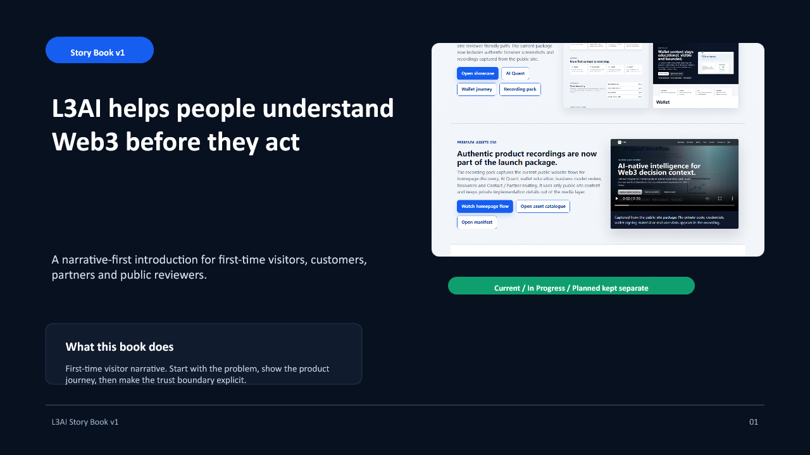
Speaker note
Open with the customer reality: people do not need more hype. They need a clean path from market context to safer review.
02. Web3 asks users to decide too quickly.
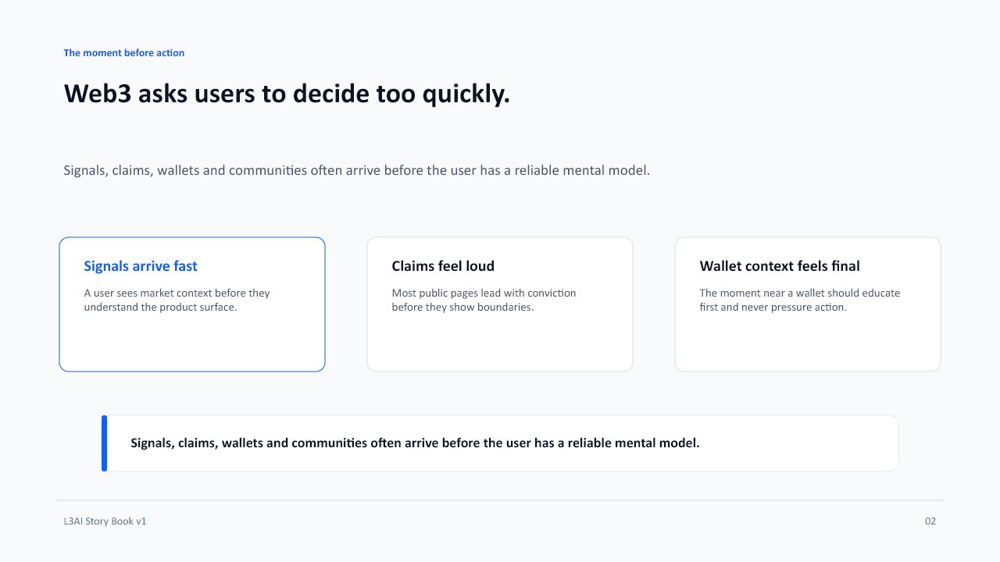
Speaker note
This slide frames the story without attacking others. L3AI is positioned as a guided review layer.
03. Slow the decision down, then make the next step clear.
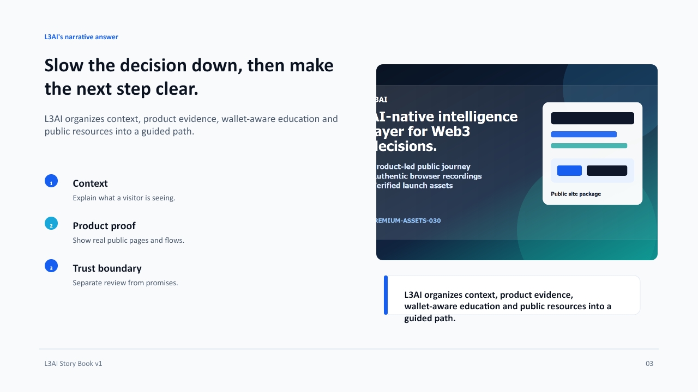
Speaker note
Explain the product story as a sequence. The goal is not to push users; it is to help them review.
04. A first visit should feel like a guided room.
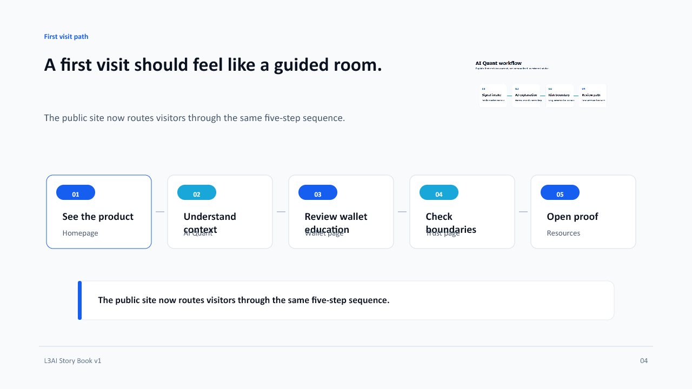
Speaker note
This matches the new website IA: story first, product proof second, resources third.
05. AI Quant explains the signal before a user forms a conclusion.
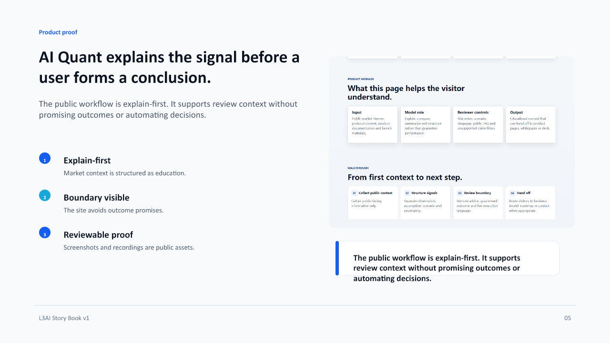
Speaker note
Be precise here: AI Quant is a public explanation layer, not a guaranteed prediction engine.
06. Wallet context becomes a checkpoint, not a pressure point.
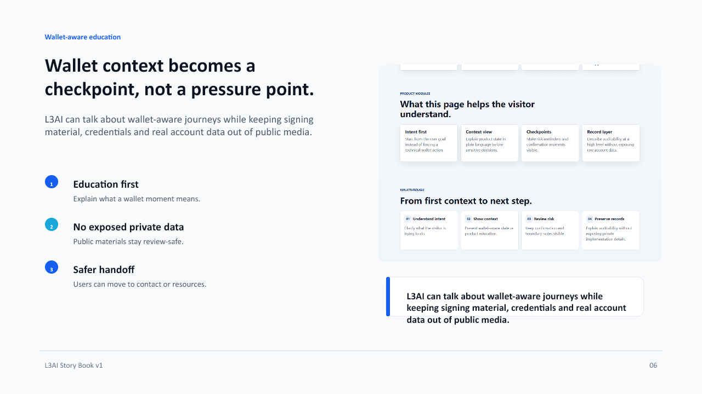
Speaker note
Use this slide to reinforce that public collateral is intentionally safe and does not expose private data.
07. The trust boundary is part of the product.
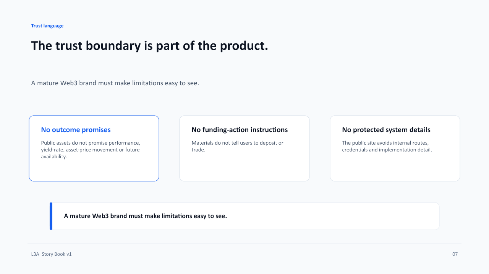
Speaker note
Make the boundary sound like a product quality, not a legal footnote.
08. Resources turn claims into reviewable files.
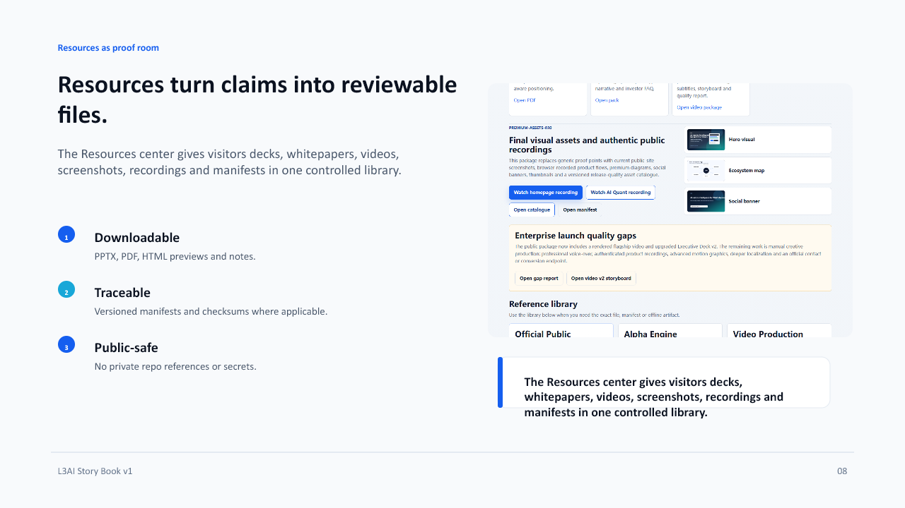
Speaker note
The story ends with proof. That is the difference between a mature launch package and a pile of marketing claims.
09. Every public claim sits in a status lane.
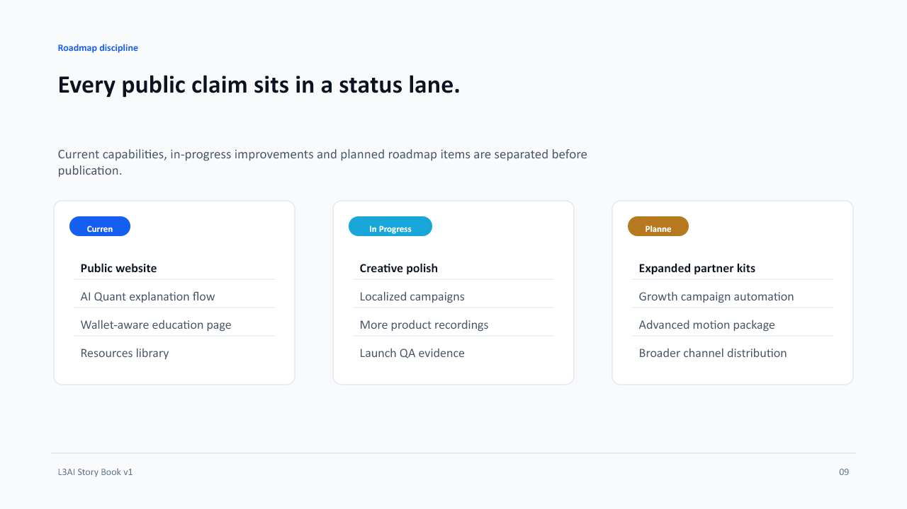
Speaker note
This slide protects the brand from overstating future functionality.
10. Different visitors need different next steps.
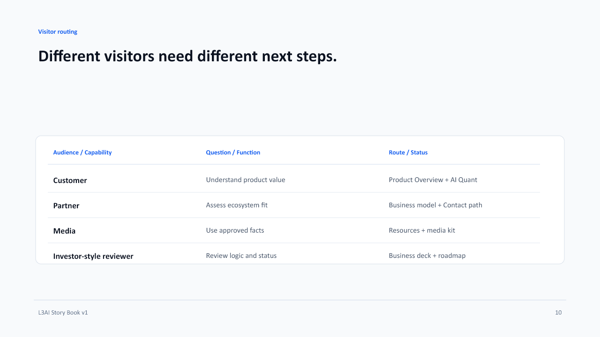
Speaker note
This is the page-level reason for rebuilding the website IA around the story.
11. A credible story is also clear about what it is not.
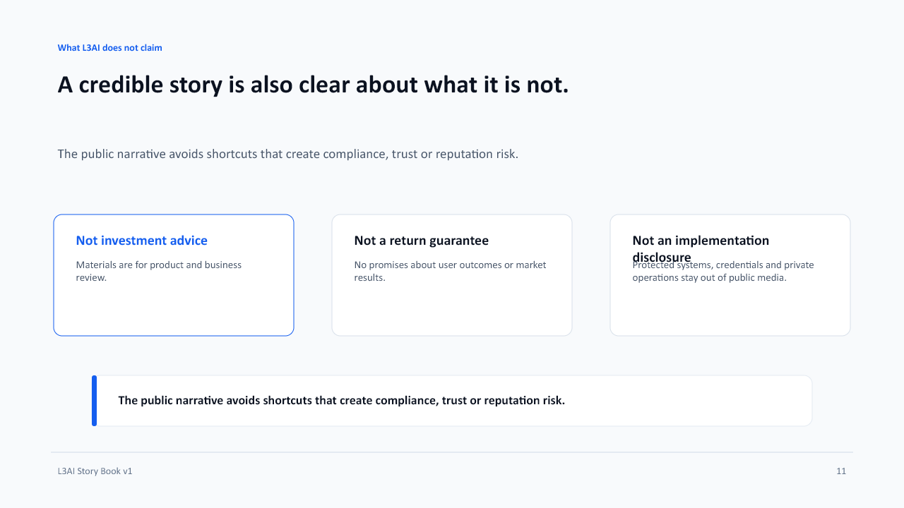
Speaker note
This slide should be used whenever the deck is sent externally.
12. Open the story, then choose your path.
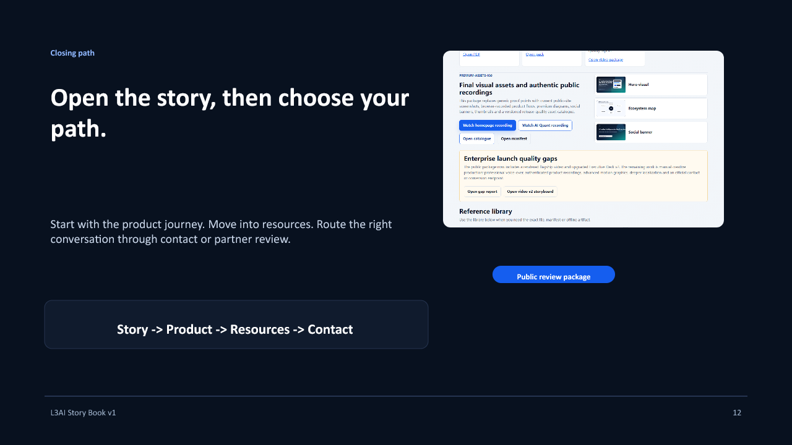
Speaker note
Close with a calm call to action. The visitor is invited to review, not pressured to convert.